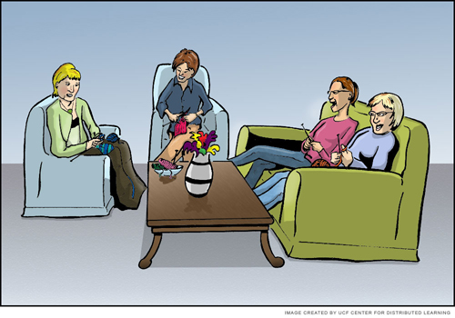

Beatriz Reyes-Foster
Module 1 – Language is Socially Charged
Before you Read
Welcome to the most important module of the semester! I say this not because the material covered in our other modules isn’t important, but because you need to understand the concepts explained in this module in order to understand any of the information covered in our other modules. This is particularly important if you do not have a background in linguistics.
This module is meant to guide your reading –you should read this and the Focus Points section of the module before you begin reading. This module focuses on the most important aspects of the material covered in this week’s class. It does not replicate the information in your textbook; rather, it highlights and enhances important information and provides supplementary materials to further your understanding of the subject matter.
This week we will not be meeting f2f (face to face). Carefully review this module, complete the graded discussion assignment, and post any questions you might have to the “Ask Dr. Reyes-Foster” discussion board. Chances are if you have a question about the course, others do too!!
Words that have been emphasized require special attention and should appear in assessments such as our graded group discussions, or in tests or quizzes. The supplementary materials in this module are meant to better illustrate the concepts and ideas discussed in the reading.
Focus Points
As you read, you pay special attention to the following themes, concepts, and issues:
- The primary difference between linguistics and linguistic anthropology.
- Pay special attention to how Chomsky’s approach to language and how it contrasts to that of linguistic anthropologists.
- The five basic components of a language that can be studied.
- The four key terms in linguistic anthropology
Chomsky and Knitting
What does it mean to “know” a language? Chomsky draws a distinction between competence, the abstract and usually unconscious knowledge of a language, and performance, the putting into practice of the language. De Saussure makes a nearly identical distinction between langue, the language system in the abstract, and parole, everyday speech. Ahearn uses a knitting metaphor to explain this: a person might have an abstract knowledge of how to knit a sweater (competence) but in actually knitting the sweater he or she may drop a stich or make the arms a bit too long or short. To both Chomsky and De Saussure, the abstract knowledge of the system is what’s important. Neither is very interested in the “how” of the system.
To continue with the knitting metaphor, Chomsky and his students are primarily interested in the abstract rules of Knitting. He would be uninterested in
- How or why people knit in various cultures
- How knitting practices have changed over time
- The gendered nature of knitting in specific societies
- The different meanings attached to knitting in each of the following images:
Image Below: Cover from a knitting book titled “naughty needles” showing a woman dressed in a knit two-piece bathing suit posed suggestively. © Robyn Edem Source: Naughty Needles by Nikol Lohr.

What do the images above convey? What sorts of cultural icons come to mind as you look at them? The images above are an example of the kind of information Chomsky might miss if his focus in only on the rules of knitting. Similarly, linguistic anthropologists are interested in the ways in which language is an intrinsic part of social life.
Five Components of Language
In the textbook (page 11), Ahearn outlines five basic areas of language that can be studied:
- phonology
- (the study of sound in language),
- morphology
- (the study of the internal structures of words),
- syntax
- (the study of the structure of sentences),
- semantics
- (the study of meaning in language), and
- pragmatics
- (the study of language use).
Linguists tend to study the first three (phonology, morphology, and syntax); Linguistic Anthropologists tend to study the last two (semantics and pragmatics).
Examples of Linguistic Anthropology
Take a minute to review the ethnographies of language described in pages 12-17. How do you think that semantics and pragmatics come into play in these studies? How are these studies different from and similar to each other? All of these studies share two basic tenets:
- Language must not be studied in isolation from social practices.
- Questions about social practices and meanings can be answered by paying close attention to language.